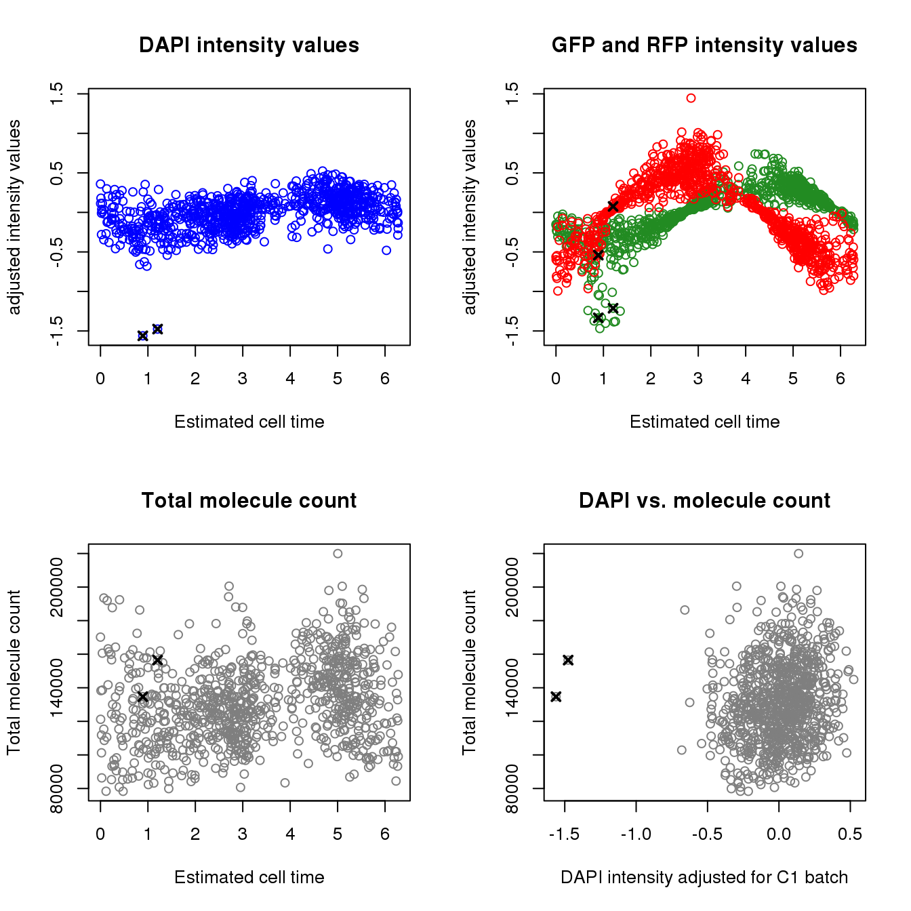
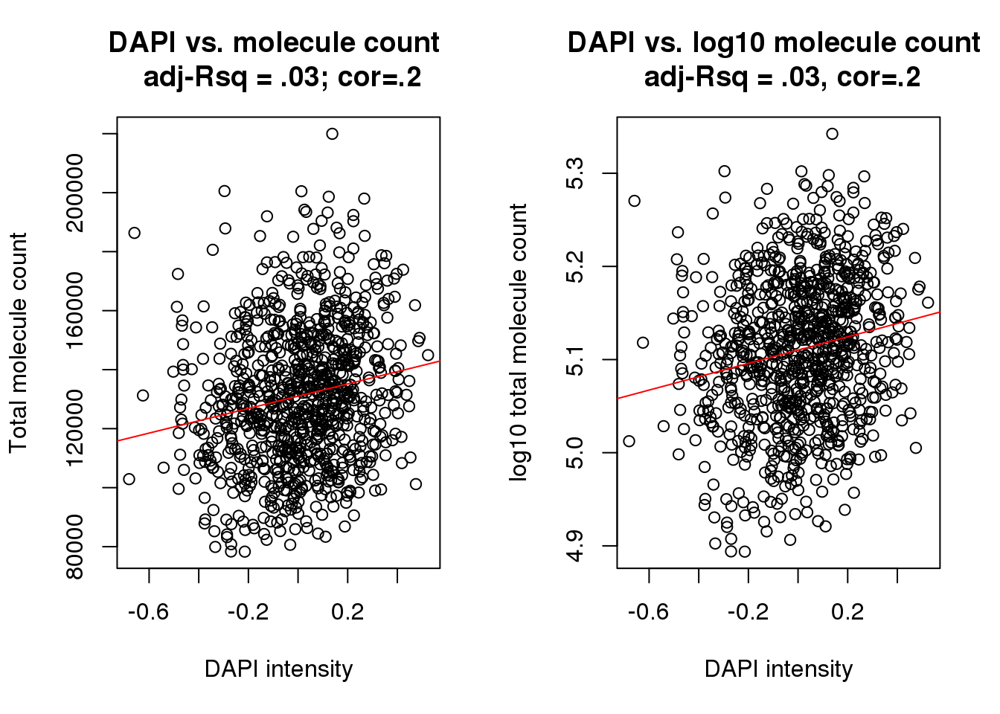

Last updated: 2018-04-11
Code version: cde0b19
library(Biobase)
# load gene expression
df <- readRDS(file="../data/eset-final.rds")
pdata <- pData(df)
fdata <- fData(df)
log2cpm.all <- t(log2(1+(10^6)*(t(exprs(df))/pdata$molecules)))
macosko <- readRDS("../data/cellcycle-genes-previous-studies/rds/macosko-2015.rds")
pc.fucci <- prcomp(subset(pdata,
select=c("rfp.median.log10sum.adjust",
"gfp.median.log10sum.adjust")),
center = T, scale. = T)
Theta.cart <- pc.fucci$x
library(circular)
Theta.fucci <- coord2rad(Theta.cart)
Theta.fucci <- 2*pi - Theta.fucciCluster cell times to move the origin of the cell times
# cluster cell time
library(movMF)
clust.res <- lapply(2:5, function(k) {
movMF(Theta.cart, k=k, nruns = 100, kappa = list(common = TRUE))
})
k.list <- sapply(clust.res, function(x) length(x$theta) + length(x$alpha) + 1)
bic <- sapply(1:length(clust.res), function(i) {
x <- clust.res[[i]]
k <- k.list[i]
n <- nrow(Theta.cart)
-2*x$L + k *(log(n) - log(2*pi)) })
plot(bic)
labs <- predict(clust.res[[2]])
saveRDS(labs, file = "../output/images-time-eval.Rmd/labs.rds")labs <- readRDS(file = "../output/images-time-eval.Rmd/labs.rds")
summary(as.numeric(Theta.fucci)[labs==1]) Min. 1st Qu. Median Mean 3rd Qu. Max.
2.885 3.537 3.941 3.896 4.243 5.069 summary(as.numeric(Theta.fucci)[labs==2]) Min. 1st Qu. Median Mean 3rd Qu. Max.
1.179 1.646 2.091 2.063 2.455 2.861 summary(as.numeric(Theta.fucci)[labs==3]) Min. 1st Qu. Median Mean 3rd Qu. Max.
0.004025 0.304041 1.112189 3.000234 5.923906 6.282360 # move the origin to 1.17
Theta.fucci.new <- vector("numeric", length(Theta.fucci))
cutoff <- min(Theta.fucci[labs==2])
Theta.fucci.new[Theta.fucci>=cutoff] <- Theta.fucci[Theta.fucci>=cutoff] - cutoff
Theta.fucci.new[Theta.fucci<cutoff] <- Theta.fucci[Theta.fucci<cutoff] - cutoff + 2*piTry plotting for one gene
macosko[macosko$hgnc == "CDK1",] hgnc phase ensembl
113 CDK1 G2 ENSG00000170312cdk1 <- log2cpm.all[rownames(log2cpm.all)=="ENSG00000170312",]
plot(x=Theta.fucci.new, y = cdk1)
points(y=cdk1[labs==1], x=as.numeric(Theta.fucci.new)[labs==1], pch=16, cex=.7, col = "red")
points(y=cdk1[labs==2], x=as.numeric(Theta.fucci.new)[labs==2], pch=16, cex=.7, col = "forestgreen")
points(y=cdk1[labs==3], x=as.numeric(Theta.fucci.new)[labs==3], pch=16, cex=.7, col = "blue")Check data points with outlier DAPI values
ii.min.dapi <- order(pData(df)$dapi.median.log10sum.adjust)[1:2]
pData(df)[ii.min.dapi,] experiment well cell_number concentration ERCC
20170924-E08 20170924 E08 1 1.125631 50x dilution
20170924-F03 20170924 F03 1 2.157178 50x dilution
individual.1 individual.2 image_individual image_label
20170924-E08 NA18870 NA19160 19160_18870 29
20170924-F03 NA18870 NA19160 19160_18870 33
raw umi mapped unmapped reads_ercc reads_hs
20170924-E08 4494424 3083676 2197773 885903 169730 2027183
20170924-F03 4884157 3348082 2349374 998708 158751 2189654
reads_egfp reads_mcherry molecules mol_ercc mol_hs mol_egfp
20170924-E08 783 77 134694 3220 131433 39
20170924-F03 957 12 156481 3373 153055 46
mol_mcherry detect_ercc detect_hs chip_id chipmix freemix
20170924-E08 2 40 8284 NA19160 0.21325 0.08510
20170924-F03 7 40 8691 NA18870 0.39507 0.15026
snps reads avg_dp min_dp snps_w_min valid_id cut_off_reads
20170924-E08 311848 7531 0.02 1 3354 TRUE TRUE
20170924-F03 311848 8223 0.03 1 3694 TRUE TRUE
unmapped_ratios cut_off_unmapped ercc_percentage cut_off_ercc
20170924-E08 0.2872880 TRUE 0.07722818 TRUE
20170924-F03 0.2982926 TRUE 0.06757162 TRUE
cut_off_genes ercc_conversion conversion conversion_outlier
20170924-E08 TRUE 0.01897131 0.06483529 FALSE
20170924-F03 TRUE 0.02124711 0.06989917 FALSE
molecule_outlier filter_all rfp.median.log10sum
20170924-E08 FALSE TRUE 1.702458
20170924-F03 FALSE TRUE 2.155286
gfp.median.log10sum dapi.median.log10sum
20170924-E08 1.421271 1.176911
20170924-F03 1.421271 1.146540
rfp.median.log10sum.adjust gfp.median.log10sum.adjust
20170924-E08 -0.54086625 -1.333926
20170924-F03 0.07550985 -1.212614
dapi.median.log10sum.adjust size perimeter eccentricity
20170924-E08 -1.561447 703 107 0.9337102
20170924-F03 -1.476240 405 62 0.6811795
theta
20170924-E08 2.070977
20170924-F03 2.382573par(mfrow=c(2,2))
ylims <- with(pdata, range(c(dapi.median.log10sum.adjust,
gfp.median.log10sum.adjust,
rfp.median.log10sum.adjust)))
plot(as.numeric(Theta.fucci.new), pdata$dapi.median.log10sum.adjust, col = "blue",
ylab= "adjusted intensity values",
ylim = ylims, main = "DAPI intensity values",
xlab ="Estimated cell time")
points(as.numeric(Theta.fucci.new)[ii.min.dapi],
pdata$dapi.median.log10sum.adjust[ii.min.dapi], pch=4, lwd=2, cex=1)
plot(as.numeric(Theta.fucci.new), pdata$gfp.median.log10sum.adjust, col = "forestgreen",
ylab= "adjusted intensity values",
ylim = ylims, main = "GFP and RFP intensity values",
xlab ="Estimated cell time")
points(as.numeric(Theta.fucci.new)[ii.min.dapi],
pdata$gfp.median.log10sum.adjust[ii.min.dapi], pch=4, lwd=2, cex=1)
points(as.numeric(Theta.fucci.new), pdata$rfp.median.log10sum.adjust, col = "red")
points(as.numeric(Theta.fucci.new)[ii.min.dapi],
pdata$rfp.median.log10sum.adjust[ii.min.dapi], pch=4, lwd=2, cex=1)
plot(as.numeric(Theta.fucci.new), pdata$molecules, main = "Total molecule count",
xlab ="Estimated cell time", ylab = "Total molecule count", col = "gray50")
points(as.numeric(Theta.fucci.new)[ii.min.dapi],
pdata$molecules[ii.min.dapi], pch=4, lwd=2, cex=1)
plot(pdata$dapi.median.log10sum.adjust, pdata$molecules, main = "DAPI vs. molecule count",
xlab = "DAPI intensity adjusted for C1 batch", ylab = "Total molecule count",
col = "gray50")
points(pdata$dapi.median.log10sum.adjust[ii.min.dapi],
pdata$molecules[ii.min.dapi], pch=4, lwd=2, cex=1)
Test the association between total sample molecule count and DAPI.
After excluding outliers, pearson correlation is .2
Consider lm(molecules ~ dapi). The adjusted R-squared is .04
Consider lm(log10(molecules) ~ dapi). The adjusted R-squared is .04
Weak linear trend between molecule count and DAPI…
xy <- data.frame(dapi=pdata$dapi.median.log10sum.adjust,
molecules=pdata$molecules,
chip_id=pdata$chip_id)
xy <- xy[xy$dapi > -1,]
fit <- lm(molecules~dapi+factor(chip_id), data=xy)
summary(fit)
Call:
lm(formula = molecules ~ dapi + factor(chip_id), data = xy)
Residuals:
Min 1Q Median 3Q Max
-54492 -15575 -1546 13723 71917
Coefficients:
Estimate Std. Error t value Pr(>|t|)
(Intercept) 128330.1 2191.8 58.550 < 2e-16 ***
dapi 17081.8 3732.2 4.577 5.40e-06 ***
factor(chip_id)NA18855 -7233.1 2838.5 -2.548 0.01100 *
factor(chip_id)NA18870 2640.0 2680.6 0.985 0.32495
factor(chip_id)NA19098 -833.6 2733.1 -0.305 0.76043
factor(chip_id)NA19101 17348.1 2976.0 5.829 7.81e-09 ***
factor(chip_id)NA19160 9631.3 3034.5 3.174 0.00156 **
---
Signif. codes: 0 '***' 0.001 '**' 0.01 '*' 0.05 '.' 0.1 ' ' 1
Residual standard error: 22160 on 879 degrees of freedom
Multiple R-squared: 0.1335, Adjusted R-squared: 0.1276
F-statistic: 22.57 on 6 and 879 DF, p-value: < 2.2e-16fit <- lm(log10(molecules)~dapi+factor(chip_id), data=xy)
summary(fit)
Call:
lm(formula = log10(molecules) ~ dapi + factor(chip_id), data = xy)
Residuals:
Min 1Q Median 3Q Max
-0.20393 -0.04962 0.00043 0.04868 0.21492
Coefficients:
Estimate Std. Error t value Pr(>|t|)
(Intercept) 5.103490 0.007289 700.187 < 2e-16 ***
dapi 0.058028 0.012411 4.675 3.39e-06 ***
factor(chip_id)NA18855 -0.027545 0.009439 -2.918 0.00361 **
factor(chip_id)NA18870 0.006707 0.008914 0.752 0.45197
factor(chip_id)NA19098 -0.005623 0.009089 -0.619 0.53626
factor(chip_id)NA19101 0.054951 0.009896 5.553 3.73e-08 ***
factor(chip_id)NA19160 0.030816 0.010091 3.054 0.00233 **
---
Signif. codes: 0 '***' 0.001 '**' 0.01 '*' 0.05 '.' 0.1 ' ' 1
Residual standard error: 0.0737 on 879 degrees of freedom
Multiple R-squared: 0.1371, Adjusted R-squared: 0.1312
F-statistic: 23.28 on 6 and 879 DF, p-value: < 2.2e-16fit <- lm(molecules~dapi, data=xy)
summary(fit)
Call:
lm(formula = molecules ~ dapi, data = xy)
Residuals:
Min 1Q Median 3Q Max
-49959 -16957 -585 15862 86073
Coefficients:
Estimate Std. Error t value Pr(>|t|)
(Intercept) 131005.0 784.9 166.902 < 2e-16 ***
dapi 20835.5 3794.1 5.492 5.21e-08 ***
---
Signif. codes: 0 '***' 0.001 '**' 0.01 '*' 0.05 '.' 0.1 ' ' 1
Residual standard error: 23350 on 884 degrees of freedom
Multiple R-squared: 0.03299, Adjusted R-squared: 0.0319
F-statistic: 30.16 on 1 and 884 DF, p-value: 5.209e-08fit <- lm(log10(molecules)~dapi, data=xy)
summary(fit)
Call:
lm(formula = log10(molecules) ~ dapi, data = xy)
Residuals:
Min 1Q Median 3Q Max
-0.201411 -0.053816 0.004652 0.056963 0.222330
Coefficients:
Estimate Std. Error t value Pr(>|t|)
(Intercept) 5.110141 0.002613 1955.683 < 2e-16 ***
dapi 0.071475 0.012630 5.659 2.06e-08 ***
---
Signif. codes: 0 '***' 0.001 '**' 0.01 '*' 0.05 '.' 0.1 ' ' 1
Residual standard error: 0.07772 on 884 degrees of freedom
Multiple R-squared: 0.03496, Adjusted R-squared: 0.03387
F-statistic: 32.02 on 1 and 884 DF, p-value: 2.057e-08cor(xy$dapi, xy$molecules, method = "pearson")[1] 0.1816292cor(xy$dapi, log10(xy$molecules), method = "pearson")[1] 0.1869765par(mfrow=c(1,2))
plot(x=xy$dapi, y = xy$molecules,
xlab = "DAPI intensity", ylab = "Total molecule count",
main = "DAPI vs. molecule count \n adj-Rsq = .03; cor=.2")
abline(lm(molecules~dapi, data=xy), col = "red")
plot(x=xy$dapi, y = log10(xy$molecules),
xlab = "DAPI intensity", ylab = "log10 total molecule count",
main = "DAPI vs. log10 molecule count \n adj-Rsq = .03, cor=.2")
abline(lm(log10(molecules)~dapi, data=xy), col = "red")
theta <- as.numeric(Theta.fucci.new)
names(theta) <- colnames(log2cpm.all)
saveRDS(theta,
file = "../output/images-time-eval.Rmd/theta.rds")sessionInfo()R version 3.4.1 (2017-06-30)
Platform: x86_64-redhat-linux-gnu (64-bit)
Running under: Scientific Linux 7.2 (Nitrogen)
Matrix products: default
BLAS/LAPACK: /usr/lib64/R/lib/libRblas.so
locale:
[1] LC_CTYPE=en_US.UTF-8 LC_NUMERIC=C
[3] LC_TIME=en_US.UTF-8 LC_COLLATE=en_US.UTF-8
[5] LC_MONETARY=en_US.UTF-8 LC_MESSAGES=en_US.UTF-8
[7] LC_PAPER=en_US.UTF-8 LC_NAME=C
[9] LC_ADDRESS=C LC_TELEPHONE=C
[11] LC_MEASUREMENT=en_US.UTF-8 LC_IDENTIFICATION=C
attached base packages:
[1] parallel stats graphics grDevices utils datasets methods
[8] base
other attached packages:
[1] circular_0.4-93 Biobase_2.38.0 BiocGenerics_0.24.0
loaded via a namespace (and not attached):
[1] Rcpp_0.12.16 mvtnorm_1.0-7 digest_0.6.15 rprojroot_1.3-2
[5] backports_1.1.2 git2r_0.21.0 magrittr_1.5 evaluate_0.10.1
[9] stringi_1.1.7 boot_1.3-19 rmarkdown_1.9 tools_3.4.1
[13] stringr_1.3.0 yaml_2.1.18 compiler_3.4.1 htmltools_0.3.6
[17] knitr_1.20 This R Markdown site was created with workflowr